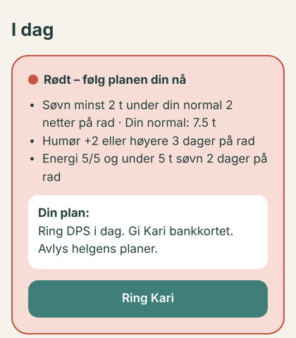

<title>250 ideer som kan endre liv</title>
<meta name="claude:viewport-fit-sides" content="cover">
<link rel="preconnect" href="https://fonts.googleapis.com">
<link rel="preconnect" href="https://fonts.gstatic.com" crossorigin>
<link rel="stylesheet" href="https://fonts.googleapis.com/css2?family=Atkinson+Hyperlegible:ital,wght@0,400;0,700;1,400&family=Young+Serif&display=swap">
<style>
/* Layout: én rolig spalte (maks 1080px), helt hero med illustrasjon til høyre, myke kort, store bokstaver for alle aldre. */
:root {
  --bg: #f7f2e7; --surface: #fffbf3; --sunk: #efe7d6; --ink: #213b39; --muted: #5b6e6b; --line: #e2d9c6;
  --teal: #3f7f7a; --teal-soft: #d9e9e5; --coral: #c9624b; --coral-soft: #f6ddd4;
  --display: "Young Serif", Georgia, "Times New Roman", serif;
  --body: "Atkinson Hyperlegible", system-ui, -apple-system, "Segoe UI", sans-serif;
  --step-0: 1.1875rem; --step-1: 1.4rem; --step-2: 1.9rem; --step-3: clamp(2.3rem, 5.5vw, 3.6rem);
  --r: 22px;
}
@media (prefers-color-scheme: dark) { :root:not([data-theme="light"]) {
  --bg: #16201f; --surface: #1d2a28; --sunk: #13201e; --ink: #ece4d3; --muted: #a8b6b2; --line: #2e3e3b;
  --teal: #7fbcb4; --teal-soft: #22403c; --coral: #ee9a84; --coral-soft: #4a2c25; color-scheme: dark; } }
:root[data-theme="dark"] {
  --bg: #16201f; --surface: #1d2a28; --sunk: #13201e; --ink: #ece4d3; --muted: #a8b6b2; --line: #2e3e3b;
  --teal: #7fbcb4; --teal-soft: #22403c; --coral: #ee9a84; --coral-soft: #4a2c25; color-scheme: dark; }

* { box-sizing: border-box; }
body { background: var(--bg); color: var(--ink); font-family: var(--body); font-size: var(--step-0); line-height: 1.6; }
.wrap { max-width: 1080px; margin: 0 auto; padding-left: max(16px, env(safe-area-inset-left, 0px)); padding-right: max(16px, env(safe-area-inset-right, 0px)); }
section { padding-block: 56px; }
h1, h2, h3 { font-family: var(--display); font-weight: 400; line-height: 1.15; text-wrap: balance; margin: 0; }
h2 { font-size: var(--step-2); margin-bottom: 12px; }
h3 { font-size: var(--step-1); }
p { margin: 0; max-width: 62ch; }
.lede { color: var(--muted); }
.eyebrow { font-size: .9rem; letter-spacing: .08em; text-transform: uppercase; color: var(--teal); font-weight: 700; }
a { color: var(--teal); }
:focus-visible { outline: 3px solid var(--coral); outline-offset: 3px; border-radius: 6px; }

/* Hero */
.hero { display: grid; grid-template-columns: 1fr 1.1fr; gap: 24px; align-items: center; padding-block: 40px 24px; }
.hero h1 { font-size: var(--step-3); margin: 10px 0 18px; }
.hero h1 em { font-style: normal; color: var(--coral); }
.hero .art { min-width: 0; }
.hero .art svg { width: 100%; height: auto; display: block; border-radius: var(--r); }
.hero .cta-row { display: flex; flex-wrap: wrap; gap: 12px; margin-top: 26px; }
.btn { display: inline-block; font: inherit; font-weight: 700; border-radius: 999px; padding: 14px 24px; border: 2px solid var(--teal); background: var(--teal); color: var(--bg); text-decoration: none; cursor: pointer; }
.btn.ghost { background: transparent; color: var(--teal); }
@media (max-width: 760px) { .hero { grid-template-columns: 1fr; } .hero .art { order: -1; } }

/* Fem kamper */
.fights { display: grid; grid-template-columns: repeat(5, minmax(0, 1fr)); gap: 12px; margin-top: 24px; }
.fight { background: var(--surface); border: 1px solid var(--line); border-radius: var(--r); padding: 18px; display: flex; flex-direction: column; gap: 6px; }
.fight b { font-family: var(--display); font-weight: 400; font-size: 1.7rem; color: var(--coral); font-variant-numeric: tabular-nums; }
.fight span { font-size: .95rem; color: var(--muted); }
.fight .src { font-size: .78rem; margin-top: auto; }
@media (max-width: 900px) { .fights { grid-template-columns: repeat(2, minmax(0, 1fr)); } }
@media (max-width: 460px) { .fights { grid-template-columns: 1fr; } }

/* Filter */
.chips { display: flex; flex-wrap: wrap; gap: 8px; margin: 20px 0; }
.chip { font: inherit; font-size: 1rem; border: 2px solid var(--line); background: var(--surface); color: var(--ink); border-radius: 999px; padding: 8px 16px; cursor: pointer; }
.chip[aria-pressed="true"] { border-color: var(--teal); background: var(--teal-soft); }

/* Topp 15 */
.grid { display: grid; grid-template-columns: repeat(3, minmax(0, 1fr)); gap: 16px; align-items: start; }
@media (max-width: 900px) { .grid { grid-template-columns: repeat(2, minmax(0, 1fr)); } }
@media (max-width: 560px) { .grid { grid-template-columns: 1fr; } }
.idea { background: var(--surface); border: 1px solid var(--line); border-radius: var(--r); padding: 20px; display: flex; flex-direction: column; gap: 10px; min-width: 0; }
.idea .top { display: flex; justify-content: space-between; align-items: baseline; gap: 8px; }
.rank { font-family: var(--display); color: var(--muted); font-variant-numeric: tabular-nums; }
.tag { font-size: .82rem; font-weight: 700; border-radius: 999px; padding: 3px 10px; background: var(--teal-soft); color: var(--teal); white-space: nowrap; }
.idea.first { border: 2px solid var(--coral); }
details summary { cursor: pointer; color: var(--teal); font-weight: 700; list-style: none; }
details summary::-webkit-details-marker { display: none; }
details summary::before { content: "+ "; }
details[open] summary::before { content: "− "; }
details .brief { margin-top: 12px; display: grid; gap: 10px; font-size: 1.02rem; }
details .brief h4 { margin: 0; font-size: .85rem; letter-spacing: .06em; text-transform: uppercase; color: var(--muted); }
details .brief ul { margin: 0; padding-left: 20px; }
details .ethics { background: var(--coral-soft); border-radius: 14px; padding: 12px 14px; }

/* MVP */
.mvp { display: grid; grid-template-columns: 280px 1fr; gap: 36px; align-items: center; background: var(--surface); border: 1px solid var(--line); border-radius: 32px; padding: 32px; }
.mvp img { width: 100%; border-radius: 26px; border: 8px solid var(--ink); display: block; }
.mvp ul { padding-left: 22px; margin: 14px 0; }
.mvp code, .mono { font-family: ui-monospace, "SF Mono", Menlo, monospace; font-size: .9em; background: var(--sunk); padding: 2px 7px; border-radius: 6px; }
pre.run { background: var(--sunk); border-radius: 14px; padding: 14px 16px; overflow-x: auto; font-size: .95rem; margin: 14px 0 0; }
@media (max-width: 760px) { .mvp { grid-template-columns: 1fr; padding: 20px; } .mvp img { max-width: 260px; margin: 0 auto; } }

/* Alle 250 */
.search { width: 100%; font: inherit; padding: 14px 18px; border-radius: 999px; border: 2px solid var(--line); background: var(--surface); color: var(--ink); }
.count { color: var(--muted); font-size: 1rem; margin: 10px 0; }
.tablewrap { overflow-x: auto; border: 1px solid var(--line); border-radius: var(--r); background: var(--surface); max-height: 640px; overflow-y: auto; }
table { border-collapse: collapse; width: 100%; font-size: 1rem; }
th, td { text-align: left; padding: 10px 14px; border-bottom: 1px solid var(--line); vertical-align: top; }
th { position: sticky; top: 0; background: var(--sunk); font-size: .85rem; letter-spacing: .05em; text-transform: uppercase; color: var(--muted); }
td.n { color: var(--muted); font-variant-numeric: tabular-nums; }
td.name { font-weight: 700; white-space: nowrap; }
tr.top td.name::after { content: " ★"; color: var(--coral); }

/* CTA */
.ask { background: var(--teal); color: var(--bg); border-radius: 32px; padding: 36px; display: grid; grid-template-columns: 1fr 1fr; gap: 28px; }
.ask h2 { color: var(--bg); }
.ask p { color: var(--bg); opacity: .9; }
.ask form { display: flex; flex-direction: column; gap: 10px; }
.ask label { font-weight: 700; }
.ask textarea, .ask input { font: inherit; border-radius: 16px; border: 0; padding: 14px; background: var(--surface); color: var(--ink); }
.ask textarea { min-height: 110px; resize: vertical; }
.ask .btn { background: var(--coral); border-color: var(--coral); color: #fff; align-self: flex-start; }
.ask .msg { min-height: 1.4em; font-weight: 700; }
.wall { list-style: none; padding: 0; margin: 18px 0 0; display: grid; gap: 8px; }
.wall li { background: color-mix(in srgb, var(--bg) 14%, transparent); border-radius: 14px; padding: 10px 14px; font-size: 1rem; }
@media (max-width: 760px) { .ask { grid-template-columns: 1fr; padding: 22px; } }

footer { padding-block: 40px 60px; color: var(--muted); font-size: 1rem; display: grid; gap: 10px; }
footer .crisis { color: var(--ink); }
@media (prefers-reduced-motion: no-preference) {
  .breath { animation: breath 8s ease-in-out infinite; transform-origin: 1130px 450px; transform-box: view-box; }
  @keyframes breath { 50% { transform: scale(1.06); } }
}
</style>

<header class="wrap hero">
  <div>
    <div class="eyebrow">Aldersomsorg · Bipolar · Ensomhet · Smerte og sorg · Økonomi</div>
    <h1>250 ideer som kan <em>endre liv</em></h1>
    <p class="lede">Vi har gått gjennom fem av de tyngste kampene folk står i, og funnet samme hull i alle: appene logger, men ingen handler når det gjelder. Her er 250 ideer som lukker det hullet, femten briefs klare til bygging og én prototype som allerede virker.</p>
    <div class="cta-row">
      <a class="btn" href="#topp15">Se de 15 beste</a>
      <a class="btn ghost" href="#prototype">Prøv prototypen</a>
    </div>
  </div>
  <div class="art">__HERO__</div>
</header>

<section class="wrap" id="hvorfor">
  <div class="eyebrow">Hvorfor</div>
  <h2>Fem kamper, ett tall hver</h2>
  <div class="fights">
    <div class="fight"><b>3 av 4</b><span>omsorgspersoner kjenner seg utbrent</span><span class="src">A Place for Mom 2025</span></div>
    <div class="fight"><b>≈ 50 %</b><span>med bipolar lidelse har perioder uten medisinene sine</span><span class="src">Etablert i fagfeltet</span></div>
    <div class="fight"><b>1 av 6</b><span>mennesker i verden er ensomme</span><span class="src">WHO-kommisjonen 2025</span></div>
    <div class="fight"><b>2,7 / 5</b><span>i snittkarakter for appene som skal hjelpe pårørende</span><span class="src">JAGS-gjennomgang</span></div>
    <div class="fight"><b>176 mrd</b><span>kroner i norsk forbruksgjeld (mai 2026)</span><span class="src">Gjeldsregisteret</span></div>
  </div>
</section>

<section class="wrap" id="topp15">
  <div class="eyebrow">Topp 15 · rangert etter effekt og hvor raskt de kan bygges</div>
  <h2>De femten vi ville bygget først</h2>
  <p class="lede">Hver idé har en full brief: problem, løsning, MVP-funksjoner, stack, suksessmål og etikk. Trykk «Les briefen».</p>
  <div class="chips" id="chips" role="group" aria-label="Filtrer etter kategori"></div>
  <div class="grid" id="grid"></div>
</section>

<section class="wrap" id="prototype">
  <div class="eyebrow">Allerede bygget</div>
  <div class="mvp">
    
    <div>
      <h2>Varsellys virker</h2>
      <p>Idé #1 er bygget og fungerer. Du sjekker inn på 30 sekunder: søvn, humør, energi og medisin. Varsellys lærer hva som er normal søvn for deg. Når dine egne varselregler slår ut, får du opp planen du selv skrev mens du var stabil, sammen med en knapp for å ringe tillitspersonen din.</p>
      <ul>
        <li>Seks regler du kan slå av og på. To gule samtidig gir rødt.</li>
        <li>Tillitspersonen ser bare grønt, gult eller rødt. Aldri dagboken.</li>
        <li>90 dager til behandleren som CSV. Du kan slette alt med ett trykk.</li>
        <li>Krisenumre står alltid nederst på skjermen.</li>
      </ul>
      <p class="lede">Node uten avhengigheter, 8 tester som går grønt. Demo på nett kommer. Kjør den lokalt så lenge:</p>
      <pre class="run">cd pipeline/mvp-varsellys
npm run seed &amp;&amp; npm start</pre>
    </div>
  </div>
</section>

<section class="wrap" id="alle">
  <div class="eyebrow">Hele samlingen</div>
  <h2>Alle 250, søkbare</h2>
  <input class="search" id="q" type="search" placeholder="Søk: «søvn», «Klarna», «demens», «sorg» …" aria-label="Søk i alle 250 ideer">
  <div class="chips" id="chips2" role="group" aria-label="Filtrer alle ideer etter kategori"></div>
  <div class="count" id="count"></div>
  <div class="tablewrap">
    <table>
      <thead><tr><th>#</th><th>Navn</th><th>Hva den gjør</th><th>For hvem</th><th>Må gjøre godt</th><th>Stack</th></tr></thead>
      <tbody id="rows"></tbody>
    </table>
  </div>
</section>

<section class="wrap" id="neste">
  <div class="ask">
    <div>
      <h2>Hvilken kamp skal vi ta neste gang?</h2>
      <p>Fortell oss hva du eller noen du kjenner står i. Det blir neste runde med research, ideer og en prototype.</p>
      <ul class="wall" id="wall"></ul>
    </div>
    <form id="form">
      <label for="s-text">Kampen</label>
      <textarea id="s-text" required maxlength="600" placeholder="F.eks. «Foreldre til barn med ADHD som ikke får hjelp før etter to år på venteliste»"></textarea>
      <label for="s-who">Hvem står i den? (valgfritt)</label>
      <input id="s-who" maxlength="120" placeholder="F.eks. «meg selv», «søsteren min»">
      <button class="btn" type="submit">Send forslaget</button>
      <div class="msg" id="s-msg" role="status"></div>
    </form>
  </div>
</section>

<footer class="wrap">
  <p class="crisis"><strong>Trenger du hjelp nå?</strong> Ring 113 ved akutt fare, legevakt 116 117, Mental Helse 116 123 eller Kirkens SOS 22 40 00 40.</p>
  <p>Ideene er forslag, ikke behandling. Kjeden fra research til ideer, briefs, prototype og denne siden er bygget med AI-assistert utvikling. Alle kilder står i <span class="mono">pipeline/01-research.md</span>.</p>
</footer>

<script>
const TOP = __TOP15__;
const ALL = __IDEAS__;
const CATS = ["Alle", "Aldersomsorg", "Bipolar", "Ensomhet", "Smerte & sorg", "Økonomi"];
const CAT_OF_SECTION = { "Aldersomsorg": "Aldersomsorg", "Bipolar lidelse": "Bipolar", "Ensomhet": "Ensomhet", "Kronisk smerte og sorg": "Smerte & sorg", "Privatøkonomi": "Økonomi" };
const TOP_IDS = new Set(TOP.map(t => t.id));
const esc = s => String(s).replace(/[&<>"']/g, c => ({ "&": "&amp;", "<": "&lt;", ">": "&gt;", '"': "&quot;", "'": "&#39;" }[c]));

function chips(el, onPick) {
  let cur = "Alle";
  const draw = () => el.innerHTML = CATS.map(c => `<button class="chip" type="button" aria-pressed="${c === cur}">${c}</button>`).join("");
  el.addEventListener("click", e => { const b = e.target.closest(".chip"); if (!b) return; cur = b.textContent; draw(); onPick(cur); });
  draw();
}

function drawTop(cat) {
  document.getElementById("grid").innerHTML = TOP.filter(t => cat === "Alle" || t.cat === cat).map(t => `
    <article class="idea${t.rank === 1 ? " first" : ""}">
      <div class="top"><span class="rank">#${t.rank}</span><span class="tag">${esc(t.cat)}</span></div>
      <h3>${esc(t.name)}</h3>
      <p>${esc(t.one)}</p>
      <details><summary>Les briefen</summary>
        <div class="brief">
          <h4>Problem</h4><p>${esc(t.problem)}</p>
          <h4>Løsning</h4><p>${esc(t.solution)}</p>
          <h4>MVP</h4><ul>${t.features.map(f => `<li>${esc(f)}</li>`).join("")}</ul>
          <h4>Stack</h4><p>${esc(t.stack)}</p>
          <h4>Slik måler vi det</h4><p>${esc(t.success)}</p>
          <div class="ethics"><h4>Etikk og sikkerhet</h4><p>${esc(t.ethics)}</p></div>
        </div>
      </details>
    </article>`).join("");
}

let allCat = "Alle";
function drawAll() {
  const q = document.getElementById("q").value.trim().toLowerCase();
  const rows = [];
  for (const sec of ALL) {
    const cat = CAT_OF_SECTION[sec.name];
    if (allCat !== "Alle" && allCat !== cat) continue;
    for (const r of sec.ideas) if (!q || r.join(" ").toLowerCase().includes(q)) rows.push(r);
  }
  document.getElementById("rows").innerHTML = rows.map(r => `<tr class="${TOP_IDS.has(r[0]) ? "top" : ""}"><td class="n">${r[0]}</td><td class="name">${esc(r[1])}</td><td>${esc(r[2])}</td><td>${esc(r[3])}</td><td>${esc(r[4])}</td><td>${esc(r[5])}</td></tr>`).join("");
  document.getElementById("count").textContent = `${rows.length} av 250 ideer · ★ = med blant topp 15`;
}

chips(document.getElementById("chips"), drawTop);
chips(document.getElementById("chips2"), c => { allCat = c; drawAll(); });
document.getElementById("q").addEventListener("input", drawAll);
drawTop("Alle"); drawAll();

// Forslag: delt lagring når siden kjører med db, ellers bare en lokal kvittering.
const wall = document.getElementById("wall"), msg = document.getElementById("s-msg");
let col = null;
function drawWall(items) {
  wall.innerHTML = items.length
    ? items.map(s => `<li>${esc(s.text)}${s.who ? ` <span style="opacity:.75">· ${esc(s.who)}</span>` : ""}</li>`).join("")
    : `<li style="opacity:.85">Ingen forslag ennå. Ditt blir det første som vises her.</li>`;
}
drawWall([]);
(async () => {
  const db = await window.claude?.use?.("db");
  if (!db) return;
  col = db.collection("suggestions");
  col.orderBy("at", "desc").limit(6).onSnapshot(s => drawWall(s.docs.map(d => d.data())), () => {});
})();
document.getElementById("form").addEventListener("submit", async e => {
  e.preventDefault();
  const text = document.getElementById("s-text").value.trim(), who = document.getElementById("s-who").value.trim();
  if (!text) { msg.textContent = "Skriv noen ord om kampen først."; return; }
  if (!col) { msg.textContent = "Takk. Forslaget ble ikke lagret, fordi denne visningen ikke har lagring."; return; }
  try {
    await col.add({ text: text.slice(0, 600), who: who.slice(0, 120), at: Date.now() });
    msg.textContent = "Takk. Forslaget er lagt til.";
    e.target.reset();
  } catch (err) {
    msg.textContent = err?.code === "not_granted" || err?.code === "permission_denied"
      ? "Du har bare lesetilgang til denne siden, så forslaget ble ikke lagret."
      : "Forslaget ble ikke lagret. Prøv igjen om litt.";
  }
});
</script>
